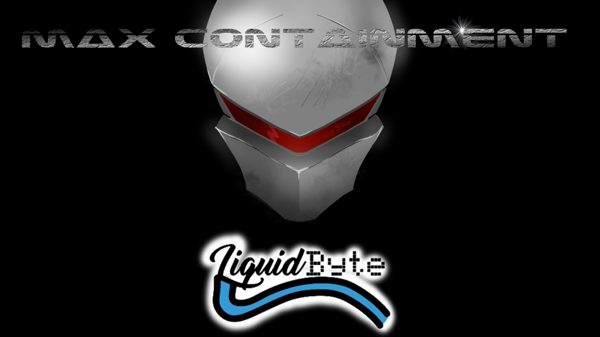
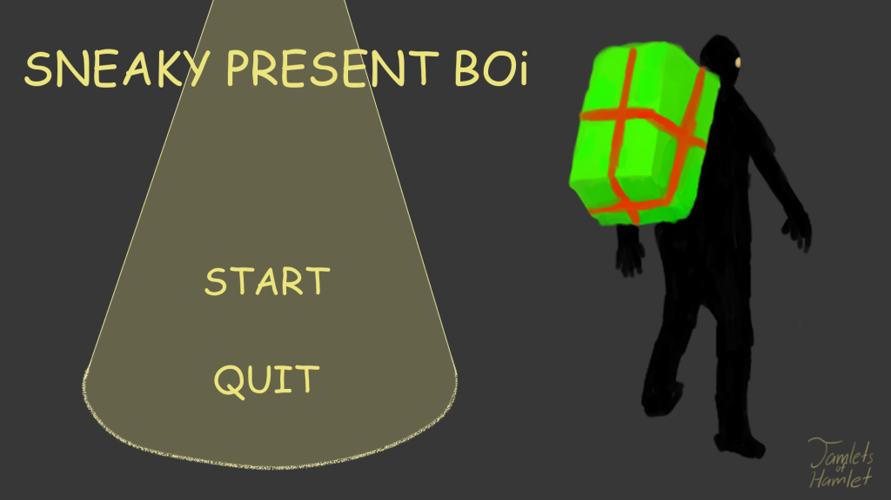
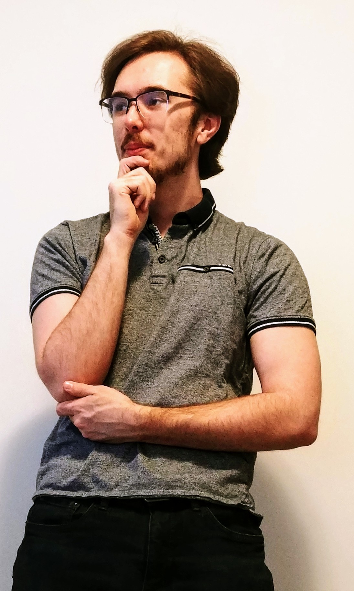

|  |  | ||
|
Biftek was a game that I worked on with a group of classmates for around 6 months. It's a battle arena game where all players run around and pick up spells that they use to beat the opponents and be the last one standing. For this project, I was the lead for UI concept and art, as well as managing audio levels while recording people and making sound effects. |
Max Containment was a game that I joined in halfway through development. It's a top-down shooter, where you must navigate a maze full of different types of mutants trying to kill you. For this project, most of the structure and game concept was done, so I took the role of making the sound effects and working on FMOD code in our c++ engine. |
Sneaky Present Boi was a game that I made with a few friends for a Game Jam contest at the end of 2019. It's a game where you navigate levels of an airport, trying to get through without getting caught with a water bottle. For this project, I helped create the designs for the levels, programmed in the animation, and implemented and scripted the lights and used the Unity NavMesh on the guards. |
This project, Putt-Putt, was an assignment that I worked on with classmates in late 2019 for an HCI class, where we had to do research and try to develop a better application to simulate it. We decided to use VR and try to improve the mini-putting experience. For this project, I worked on the VR development side in Unity using SteamVR for our library, as well as a bit of modeling. |
|  |
If you're looking through my website right now, that mean you probably want to know more about me, right? I have a bachelors degree at Ontario Tech U for Game Development and Entrepreneurship. I've always had a passion for gaming ever since I was young. From there, I realized that there were things that I didn't like about games, and wondered to myself if I could just make them instead, and how they would be so much better. Since then I've learned that that's not how it works but I'm still going strong. Through my 4 years in university, I've made numerous games for both the PC and VR platforms. Alongside these, I have worked on projects that are a little more serious, mainly for courses, that apply my learned skills well. During my off time, I spend a lot of time playing games or working on personal project that I think would be cool. Alongside this, I also practice instruments, watch hockey, and spend too much time on YouTube. |